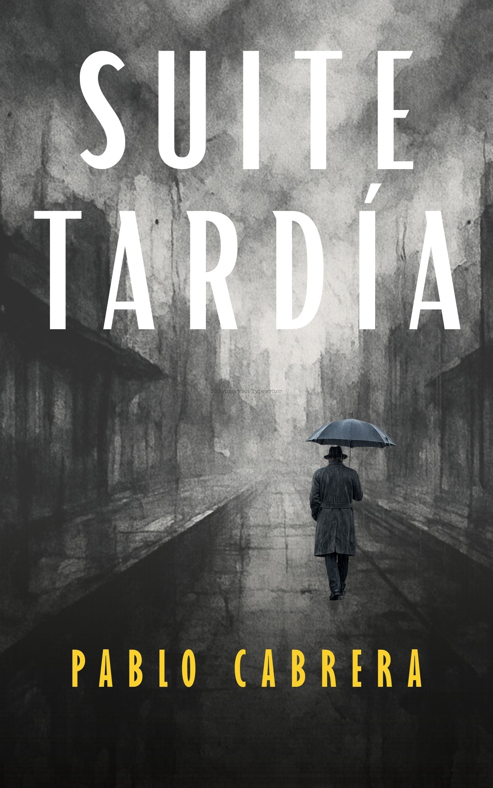

Una cartografía de obsesiones y paisajes grises por los que transitan seres corrientes que intentan tramitar la incertidumbre, atenuar el frío de ciertas estaciones o delimitar la terca persistencia de la memoria.
Suite tardía es, ante todo, un intento de poner en palabras las pequeñas o grandes grietas que el tiempo, la soledad y la ausencia van labrando discretamente en el día a día de cualquiera de nosotros. No pretende ser una gran antología ni un tratado sobre la condición humana; acaso una cartografía de mis propias obsesiones y de los paisajes grises por los que transitan personajes que quieren parecerse un poco a mí y se asemejan a muchos: seres corrientes que intentan tramitar la incertidumbre, atenuar el frío de ciertas estaciones o delimitar la terca persistencia de la memoria.
Mis protagonistas no buscan ser héroes de gesta alguna; se conforman con ser aprendices de la desolación, caminantes que colisionan con sus propias contradicciones cotidianas, con la nostalgia de mejores tiempos o con la certeza amarga de las ilusiones derrotadas.
Cada línea de este libro conlleva una voluntad de aminorar el paso, de renunciar al ruido del día a día para reconocerse en el silencio. Suite tardía se escribió como un ejercicio de cercanía, como un intento de tender las manos que escriben hacia las manos que sostienen y cobijan sus páginas.
Nací en Las Palmas de Gran Canaria un jueves 2 de julio de 1964. Mis padres cometieron la arbitrariedad de enseñarme a leer antes de que yo cumpliera los tres años, lo que significó que a tan tierna edad, mientras paseaba de la mano de una o del otro, me dedicara a ir leyendo todo rótulo publicitario con el que me cruzara por la calle.
Además de leer, desde muy joven me empezó a gustar eso de escribir. Probablemente imitaba en mis primeras narraciones, sin percatarme, a los escritores que devoraba, pero esa iniciativa fue el primer acercamiento a una actividad que luego se convertiría en una de mis vocaciones.
Cuando descubrí la poesía, espoleado por la lectura de los primeros vates que llegaron a mis manos, como Neruda, Darío o Lorca, arranqué el último velo que cubría mi verdadera disposición anímica. Mis primeras publicaciones fueron cuatro poemarios, dados a luz por el sello Ediciones Idea, entre los años 2006 y 2008.
Posteriormente, acabé por decantarme por la publicación independiente. He incursionado en la narrativa con tres colecciones de relatos breves, editadas de manera independiente. También me desempeño como revisor y corrector de textos.
En mi blog literario La voz diseminada aglutino mis opiniones, reseñas y comentarios sobre escritores y libros. Para no saturarme de letras, a ratos soy fotógrafo y en ocasiones, pintor.